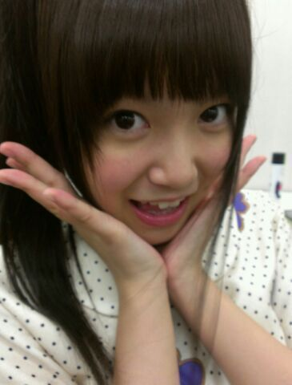
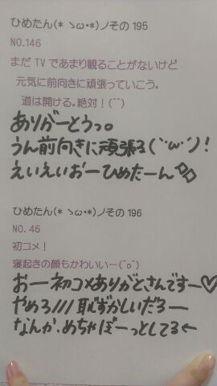
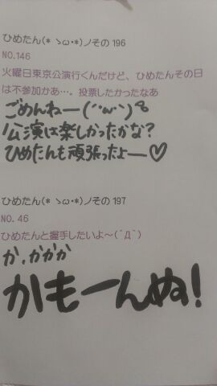
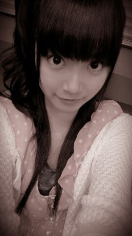
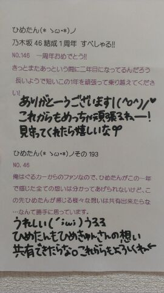
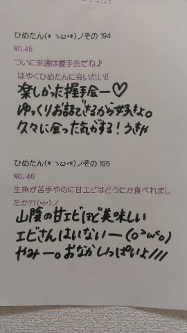
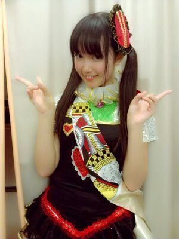
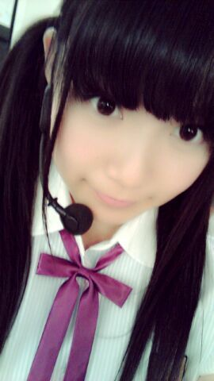
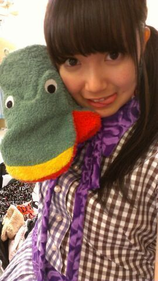

うきゃら。
カメラまんは川後さんです(・∀・)
昨日は乃木どこ？収録と写真撮影を
平行してがんばりましたー
オンエアいつだろーうー
楽しみにしてて下さいね(*^ω^*)
あ髪切ったの、わかるかしら...
あのね、切ったゆーて
あんま切ってないの(´・ω・｀)てへ
ポニーしてるから
確かにいつもより短いのだけれども
10センチほど切ったの。
土曜日は、
ふぁみりーさんとお買い物行って
あしゅしゅに遭遇しまして。
すげー
すげーすげーよ。
お洋服買ったんだってよ。
まーひめたんもお洋服買ったけどさ。
 ひめたんは休日はゆっくり出来たかな？
ひめたんは休日はゆっくり出来たかな？
ひめたんも充電完了したかな？
オフ中はしっかりリフレッシュしたかな？
りふれーっしゅできた？（笑）みんなありがとーうー(ノω;｀)
りふれーっしゅしたんだけどね、久々にお仕事行ったら体調崩しましたとさ。
あちゃまー
それくらいりふれっしゅしましたってこーと！
早く体をならさねばー
10月に長女が生まれる予定ですっ(´∀｀)
そこで、是非ひめたんに名付け親になってもらいたい！ おおうっ
人間の名付け親さん頼まれたのは初めてや(・∀・)
で、いろいろ考えてみたけど、やっぱりぱぱさん、ままさんの願いとか気持ちのこもったお名前が
一番そのお子さんにもぴったりだと思うから。
ただ、ひめたんがもしままさんだったら
女の子には「愛」って字をね、どっかにいれてあげたいなってゆ
中学生の時から持ってる信念。参考までに(^^)
ひめたんは自分が頑張った時に自分へご褒美とかするの!?頑張って得た成果自体がもうご褒美だと思う。
お勉強頑張って得た素敵な成績、レッスン頑張った結果得た素敵なパフォーマンス、とかね。
結果が実感できる努力は好き(*^^*)
そーゆーものよ。ね？
コメント時々だけれど、いいですか？遊びにきてくれるだけで嬉しいよー＊
コメント読んでるからね。ありがとう！
日芽香という名前、字も好きです。
だから僕的にはいつも日芽香と呼びたい。いいですか？もちろんもちろん(^^)


ひめたん(＊´・ω・＊)
うきゃ
200回はもーちょっと待ってください←
ごめんねーるるる

劇場公演終わって
今週しばらくオフだったから
りふれっしゅー＼(^^)／
美容室行ったの！
髪ちょっと切ったのよー(*^ω^*)
イメチェンやーおめでとうひめたんー
...
あのね。
髪切ったとき素っぴんだったのよ
だから写めとってないのよ
ごめんね(´・ω・｀)←
近々メイクして写め撮ったら
ブログ貼るー＊
今日はレッスン行ってきたー！
なみころ練習してきたきた∩^ω^∩
久しぶりに歌った踊ったー
なみころ大好きなのひめたん。
いつかみなさんの前で披露するから
ちょーっと待っててね←
あ
このおやすみにね、
改めて公演中のブログコメント
読んでたのね。
なんかー、
みんなあったかいお(´;ω;｀)
ひめきゅんさんはほんまに
ひめたんの自慢だよー
親身になって、自分のことみたいに
いろんなこと考えてくれてるなって。
いつかひめきゅんさん名言集を
作れるんじゃないかと思ふ。
ちゅーしちゃうぞー///
うきゃきゃうきゃきゃ。
日曜日は久々に全員集合するよー
みんなー会いたいよー(ω)


 コメントは短いでもひめたんは読んでるのかな？ ^^;;夜遅くなったりするんだけど、コメントや手紙は見てもらえてますか？(*^^*)
コメントは短いでもひめたんは読んでるのかな？ ^^;;夜遅くなったりするんだけど、コメントや手紙は見てもらえてますか？(*^^*)あもちろんもちろん！
むしろ元気になる！
夜とか、はー関係ないですよ＊
本当にありがとうね。
これからもコメント楽しみにしてるね！
写メっていっつも自撮りなの？んー
あーこれ自撮りだろうなーてのは
自分で撮ってると思われる(∀)
写メのメガネ越しのひめたんビームは通常ビームより何割増し？めがねびーむ。
びーむレベルを判断するのは、びーむを放ったひめたんでなく受け取ったみなさんよ。
びーむレベルが高いほどきゅんってなる。はず。
ひめたんはやっぱ七福や選抜にこだわるのかなぁ？まあー成し遂げたい目標のいっこでは
あるかなって感じ。
なれるに越したことはないけど、これからはそのプロセスも大切だよなって思ふ
僕には夢があります。それは...ひめたんの髪を切ることなんです。。ひめたんはこの夢を笑いますかい?? 笑わない！めちゃ素敵な夢ねー
応援するするよ＼(^^)／
切って切って切っ
(＊´・ω・＊)ひめたん
はいーとゆーわけで
PARCO公演を
ゆるーくふりかえってみよーう＼(^^)／
やー考えてみれば、私たちに与えられた
９日間の定期公演準備期間が
たった7日間。
2週間は本当に
わちゃわちゃしてましたねーみんな。
だって、だってだってだって
濃ゆすぎるよ(´・ω・｀)←
今までの壁なんてめじゃない感ね。
なんてゆか、忙しかったの気持ちが。
わーい定期公演決まったーと思いきや
覚えること多くて不安になったり
やっと形がみえてきたーと思いきや
今度は投票のこととか考えちゃったり
みんなで、わーいてなって、えーんってなって、まあ大変でした(・ω・)
...はい。真面目に書きます。
とにかく、みんなで手つないで仲良くクリアできたんじゃないかなーって思います！
ほんとに乃木充の2週間＊
公演成績◎11位1回。
ひめきゅんさんに対しては、
期待を越えられなくて
ごめんなさいって気持ち。
でも自分のことは
責めたりしないです。今回は。
自分の悪いとこいっぱい見つけた。
だからもっともっと努力して、
悪いとこ直して
もっとキラキラした人になりたいな、と。
そう思いまーしーた
成長したよひめたーん(´；ω；`)
自己PRについては本当に悩んだの。
お客様を盛り上げるのは得意なつもりなんだけど、
今回はオーディションを受けに来た女の子って設定を
どうしても守らなきゃいけなかったから
あえてお客様をあおったりしませんでした。
ひとつのことを最後まで突き通すのがいいんか、それとも場の雰囲気に合わせて臨機応変に対応するのがいいんか。
悩んだ結果、こけてもいいからいろいろチャレンジしてみよってなって
いろいろ試してみました。
それでいい結果になったのはたった一回だったけど、自分で決めて挑戦してみた結果なら後悔はしてないです。
あ
ミュージカルの内容を書いてなかった！
２部構成。
１部では乃木坂のうんぬんかんぬんってのは忘れて、オーディションを受けに来た１人の少女を演じる。
ダンス、自己PRが審査内容。
全員のパフォーマンスが終わってから審査員のみなさんに16人のプリンシパルを選んでいただき、２部へ。
２部は16人によるアリスin乃木坂。
アンコールで乃木坂46としてライブ。
こんな感じですー
はい、でーこっからが重要で
正直、肉体的にも精神的にもなかなか安定しない2週間でした。
じゃあどうやって
テンション維持を心がけたか。
それは
ぶろぐに寄せられるみなさんからの
応援コメントであり、
一緒に頑張ろうって励ましてくれる
乃木坂のメンバーみんなであり、
私たちを支えてくださる
すべてのスタッフさんであり、
やーこうやってひとつの物を作るために
たくさんの人が汗を流して頑張ってくださってる。
すべては、
このミュージカルが成功するために。
ああ幸せだな∩^ω^∩＊
って考えてみると
中途い気持ちで舞台にたつのは失礼だってことに気づきました！
だから頑張れたの(*^^*)///
それと個人的な考えで
公演中の握手会は効果絶大すぎた(^^)
...なんかつらつら書いちゃって
ちゃんと伝えられた自信ないけど
とりあえず、最後に。
今回の公演では、普段はおとなしい
私たちのがちぱわー伝わったかな＊
ほんとに、つらいこともあったけど
結果として得たものはおっきいはず！
夏休みの最後に、
またいっぽステップアップできました。
...かな？
このミュージカルに携わった
すべての方へ
本当に、ありがとうございました。

(＊´・ω・)ひめたん
16人のプンシパル千秋楽！
うおお終わってしまった(´；ω；`)
総括は明日ゆっくり書きたいので、
とりあ今日の報告！

謎の角度。
まあ気にしないでね∩^ω^∩＊
えっとー
あ結果から言うと、はいってない
なんか、ずっと悩んでたのよ。
PRとかPRとかPRとか。
でもね、もう最後なんだし
どーしよーとか言うのやめなよって
あみ(能條愛未chan)に言われたの。
だからもう悩むのやめた！
おうたをうたいまーした。
最後の最後に
みなさんに歌を届けることできて
ほんとによかったです///
やっぱりひめたんは歌うの大好き(#^.^#)
トークって緊張するんだけどね
歌ってるときの自分は冷静なのね。
よかった。
それに気づけたのがよかった。
スカーってした＊
ラストはねねころ(伊藤寧々chan)とちま
(樋口日奈chan)も登場しました。
みんなでありがとうできて、
ほんまよかったね(*^^*)
とゆーわけで完走！
無事千秋楽迎えることができました
本当に 本当に本当に
ありがとうございました(´；ω；`)
(＊´・ω・＊)ひめたん
16人のプリンシパル6日目！
昨日は間違えてたー5日目だったのね
終わりました6日目。
やっぱりだめだったー
でも楽しかった(*^^*)
今日も投票してくださったみなさん
応援してくださったみなさん
本当にありがとうございました！
総括は最後に、ね＊
んーちょっと書くと、悔しかった。
でも、みんな頑張ってるんだから
ひめたんも最後まで
頑張らんとなって思う。
何より、ステージ好きだもん(*^^*)
この公演は、チャレンジだと思ってます。
千秋楽にむけてひとつ。
カエルさんは今日でおしまいにする！
カエルさん ありがとうね(´；ω；`)
